COYOTES
| Photo |
Name |
Number |
Position |
Shot |
Height |
Weight |
Birthday |
Hometown |
| 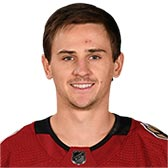 |
Josh Archibald |
45 |
RW |
R |
5' 10" |
176 |
Oct 6, 1992 |
Regina, SK, CAN |
|
Nick Cousins |
25 |
C |
L |
5' 11" |
185 |
Jul 20, 1993 |
Belleville, ON, CAN |
| 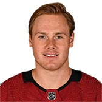 |
Lawson Crouse |
67 |
LW |
L |
6' 4" |
220 |
Jun 23, 1997 |
Mt. Brydges, ON, CAN |
|
Laurent Dauphin |
1 |
C |
L |
6' 1" |
180 |
Mar 27, 1995 |
Repentigny, QC, CAN |
| 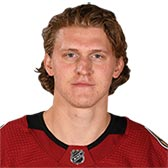 |
Christian Dvorak |
18 |
C |
L |
6' 0" |
195 |
Feb 2, 1996 |
Palos, IL, USA |
| 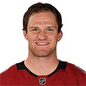 |
Christian Fischer |
36 |
RW |
R |
6' 2" |
214 |
Apr 15, 1997 |
Chicago, IL, USA |
| 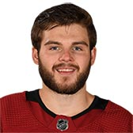 |
Alex Galchenyuk |
17 |
C |
L |
6' 1" |
207 |
Feb 12, 1994 |
Milwaukee, WI, USA |
|
Conor Garland |
19 |
C |
L |
6' 1" |
202 |
Mar 11, 1996 |
Scituate, MA, USA |
|
Michael Grabner |
40 |
RW |
L |
6' 1" |
188 |
Oct 5, 1987 |
Villach, AUT |
| 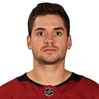 |
Vinnie Hinostroza |
13 |
C |
R |
5' 9" |
173 |
Apr 3, 1994 |
Chicago, IL, USA |
| 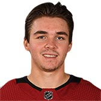 |
Clayton Keller |
9 |
C |
L |
5' 10" |
170 |
Jul 29, 1998 |
Chesterfield, MO, USA |
|
Mario Kempe |
29 |
RW |
L |
6' 0" |
185 |
Sep 19, 1988 |
Kramsfors, SWE |
|
Richard Panik |
14 |
RW |
L |
6' 1" |
208 |
Feb 7, 1991 |
Martin, SVK |
| 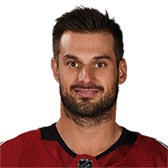 |
Brad Richardson |
15 |
C |
L |
6' 0" |
190 |
Feb 4, 1985 |
Belleville, ON, CAN |
| 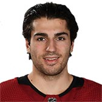 |
Nick Schmaltz |
8 |
C |
R |
6' 0" |
196 |
Feb 23, 1996 |
Madison, WI, USA |
|
Derek Stepan |
21 |
C |
R |
6' 0" |
196 |
Jun 18, 1990 |
Hastings, MN, USA |
| 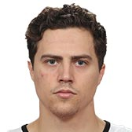 |
Jordan Weal |
26 |
C |
R |
5' 10" |
179 |
Apr 15, 1992 |
North Vancouver, BC, CAN |
| Photo |
Name |
Number |
Shot |
Height |
Weight |
Birthday |
Hometown |
|
Jakob Chychrun |
6 |
L |
6' 2" |
210 |
Mar 31, 1998 |
Boca Raton, FL, USA |
|
Kevin Connauton |
44 |
L |
6' 2" |
205 |
Feb 23, 1990 |
Edmonton, AB, CAN |
|
Jason Demers |
55 |
R |
6' 1" |
195 |
Jun 9, 1988 |
Dorval, QC, CAN |
|
Oliver Ekman-Larsson |
23 |
L |
6' 2" |
200 |
Jul 17, 1991 |
Karlskrona, SWE |
| 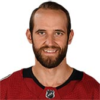 |
Alex Goligoski |
33 |
L |
5' 11" |
185 |
Jul 30, 1985 |
Grand Rapids, MN, USA |
| 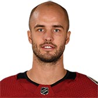 |
Niklas Hjalmarsson |
4 |
L |
6' 3" |
197 |
Jun 6, 1987 |
Eksjo, SWE |
 |
Ilya Lyubushkin |
46 |
R |
6' 2" |
201 |
Apr 6, 1994 |
Moscow, RUS |
|
Jordan Oesterle |
82 |
L |
6' 0" |
182 |
Jun 25, 1992 |
Dearborn Heights, MI, USA |
| Photo |
Name |
Number |
Height |
Weight |
Birthday |
Hometown |
|
Darcy Kuemper |
35 |
6' 5" |
215 |
May 5, 1990 |
Saskatoon, SK, CAN |
| 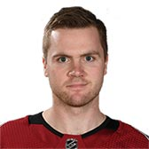 |
Calvin Pickard |
30 |
6' 1" |
207 |
Apr 15, 1992 |
Moncton, NB, CAN |
|
Antti Raanta |
32 |
6' 0" |
195 |
May 12, 1989 |
Rauma, FIN |